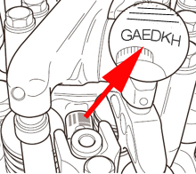

This function shall be run if one or several injectors have been replaced or moved. The 6-digit injector code is located on the injector's side. The code is a correction value and is used by the control unit to optimize fuel injection.
Cylinder 1 is located on the vibration-dampened side of the engine.
Test conditions:
Ignition on, engine off.
Parking brake applied.
Transmission in neutral.

Procedure:
Start the function.
A dialogue box shows current injector codes.
Select the cylinder for which the injector should be programmed.
Enter new injector code.
A dialogue box appears showing the new injector codes.
Programming is performed.
The function is done.
If the function fails, check the test conditions and repair any faults.